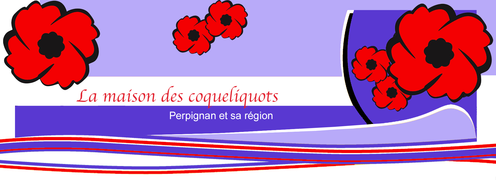

Inscription
La maison des coquelicots, foyer de vie situé à Perpignan, accueille des
handicapés mentaux de tous les âges.
N'hésitez pas à nous
rendre visite.
Contact
Directeur:
Monsieur Laurent Rousseval
Mail: laurent.rousseval@maisondescoquelicots.com
Téléphone: +33 (0)6 16 63 45 73
L’association des Papillons Blancs de Mâcon et de sa région est une
association de parents d’enfants inadaptés de type loi 1901.
Elle gère des établissements composés de structures pour enfants et
adultes en situation de handicap, atteints de déficience intellectuelle
ou d’autisme.
Association loi 1901, affiliée à l’UNAPEI, reconnue d’utilité publique,
habilitée à recevoir dons et legs avec les avantages fiscaux prévus par
la loi.
MISSIONS DE L'ASSOCIATION
- Soutenir et défendre les intérêts moraux et matériels des enfants
déficients intellectuels.
- Développer l’esprit de solidarité avec les familles adhérentes.
- Participer aux différentes commissions où les parents d’enfants
inadaptés sont représentés.
- Gérer les différents services via le Directeur par délégation.
- Créer de nouvelles structures.